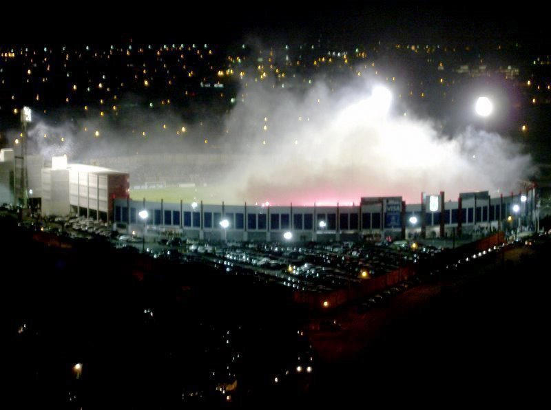
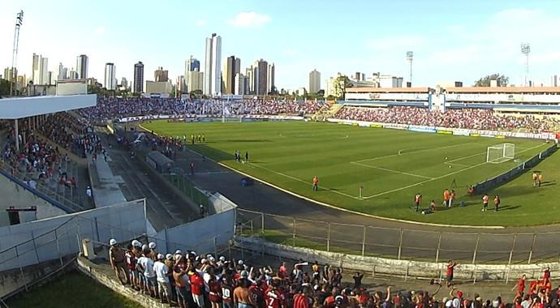
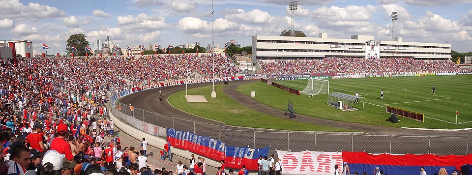

Bem-vindo ao Portal Paraná Clube: A História do Tricolor da Vila
O Paraná Clube é uma equipe de futebol de Curitiba, no estado do Paraná. Conhecido como Tricolor da Vila, o clube foi fundado em 1989 e se tornou uma das equipes tradicionais do futebol paranaense. Suas cores são vermelho, azul e branco, presentes no escudo e nos uniformes. Este espaço é dedicado a apresentar a trajetória do clube, sua origem, suas conquistas, a importância da torcida e a história da Vila Capanema. Aqui você poderá conhecer melhor a identidade paranista e alguns dos momentos que marcaram a história do Tricolor.

A Fundação do Paraná Clube e o Início de Sua Trajetória
O Paraná Clube foi fundado em 1989, a partir da união de dois clubes tradicionais de Curitiba: o Colorado Esporte Clube e o Esporte Clube Pinheiros. A criação do Tricolor marcou uma nova etapa para o futebol paranaense. Desde o início, o clube passou a representar uma nova identidade esportiva na capital. Ao longo dos anos, conquistou títulos estaduais e participou de competições nacionais, construindo uma história acompanhada por milhares de torcedores. A união que deu origem ao Paraná Clube também explica a combinação das cores vermelho, azul e branco, que se tornaram símbolos da equipe.

A Vila Capanema e a Identidade da Torcida Paranista
A Vila Capanema, cujo nome oficial é Estádio Durival Britto e Silva, é um dos principais símbolos da história do Paraná Clube. Localizado em Curitiba, o estádio faz parte da memória do futebol paranaense e recebeu partidas importantes ao longo de sua história. Para os torcedores, a Vila representa muito mais do que um campo de futebol: é um lugar de encontro, emoção e demonstração de amor pelo Tricolor. As bandeiras, os cantos e as cores vermelho, azul e branco ajudam a manter viva a identidade paranista.

Curiosidades
A origem do Tricolor
O Paraná Clube surgiu em 1989, após a união do Colorado Esporte Clube com o Esporte Clube Pinheiros. Essa união deu origem ao time que passou a representar uma nova força no futebol de Curitiba.
As três cores do clube
O vermelho, o azul e o branco são as cores tradicionais do Paraná Clube. Elas estão presentes no escudo, nos uniformes e nas bandeiras da torcida, sendo parte importante da identidade do Tricolor da Vila.
Memória e Patrimônio Paranista
A Vila Capanema faz parte da memória esportiva de Curitiba. Suas arquibancadas, sua estrutura e os momentos vividos no estádio representam uma parte importante da trajetória do Paraná Clube. Confira algumas imagens desse espaço histórico.

